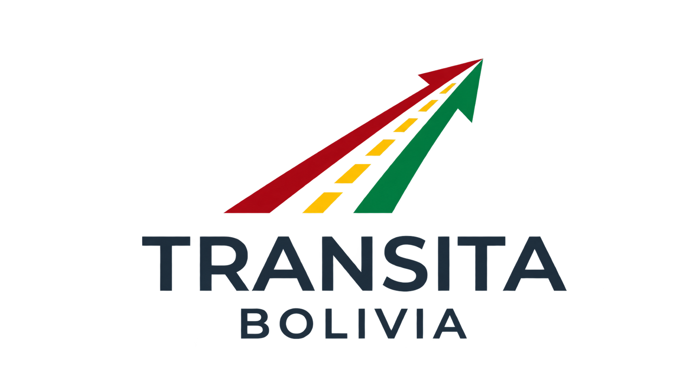

Recarga tu saldo
Solicita una recarga en el chat de la app. El operador verifica el aporte y acredita tu saldo.

MOVILIDAD QUE CONECTA
Recarga tu saldo, consulta tu destino y paga el pasaje desde Transita Bolivia. Menos vueltas al cobrar. Más tiempo para llegar.
El Torno · Jardín de las Delicias
La Guardia · Cotoca · El Torno · Porongo
Consultar destinos ↗ELIGE TU CAMINO
Consulta los municipios y el estado de sus tarifas. Salidas desde Santa Cruz de la Sierra.
Cargando destinos…
Tarifa por verificar en todos los destinos. Los cobros provinciales se habilitarán al confirmar el importe, el servicio y la vigencia.
DEL SALDO AL DESTINO
Solicita una recarga en el chat de la app. El operador verifica el aporte y acredita tu saldo.
El conductor prepara el cobro. Comprueba el destino, la cantidad de pasajeros y el total.
Escanea el QR y confirma desde tu app. Consulta el movimiento y el saldo restante.
EL SIGUIENTE PASO
La tarjeta Transita está diseñada para funcionar con una terminal de cobro: acercas la tarjeta y el pasaje se descuenta del saldo recargado de tu cuenta.
NFC · En preparaciónLa operación real requiere una tarjeta física emitida, una terminal activada y autorización del servidor.
TARJETA DE TRANSPORTE
BOLIVIASALDO RECARGABLEEl mismo saldo de tu app. Sin cuenta bancaria.
PRUEBA EL RECORRIDO
Simulador de la terminal POS. Usa ejemplos urbanos y saldo ficticio para explorar pagos grupales y saldo insuficiente.
Lista para leer la tarjeta
VIAJA CON INFORMACIÓN
En la app abre Ayuda / Soporte para reportar un cobro, consultar una recarga o solicitar tu tarjeta.
Sí. El conductor indica la cantidad y prepara un único total. Revisa ambos datos antes de confirmar el pago.
No. La tarjeta propia de Transita usará las recargas de tu cuenta. La emisión y activación NFC todavía están en preparación.
Espera la confirmación. Un cobro pendiente debe consultarse antes de repetirlo. La pantalla de saldo o una lectura de tarjeta no sustituyen el comprobante del pago.
El precio depende del recorrido y del servicio. Publicamos un importe cuando su fuente y aplicación están comprobadas; los demás destinos permanecen pendientes.